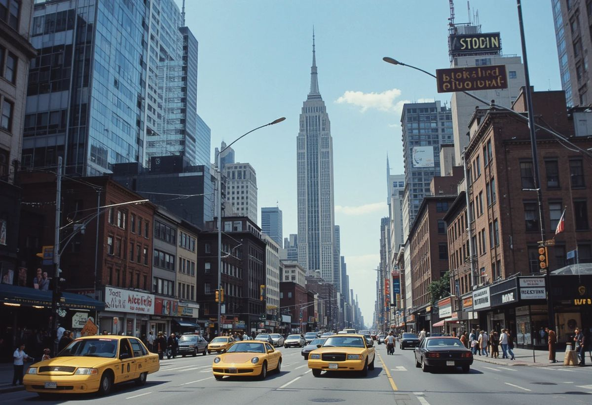
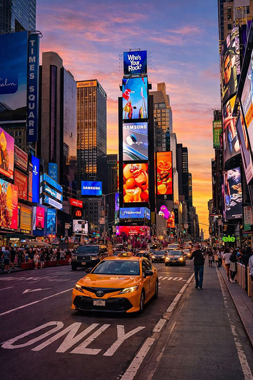
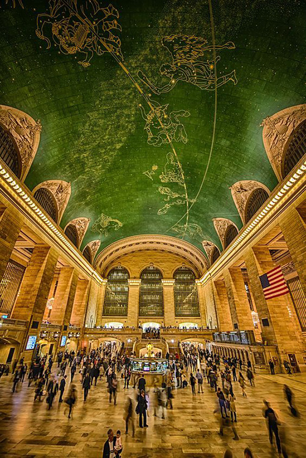
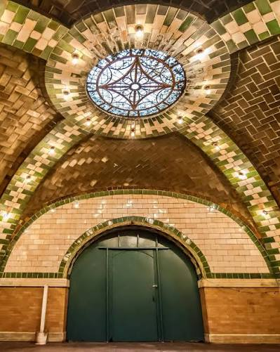
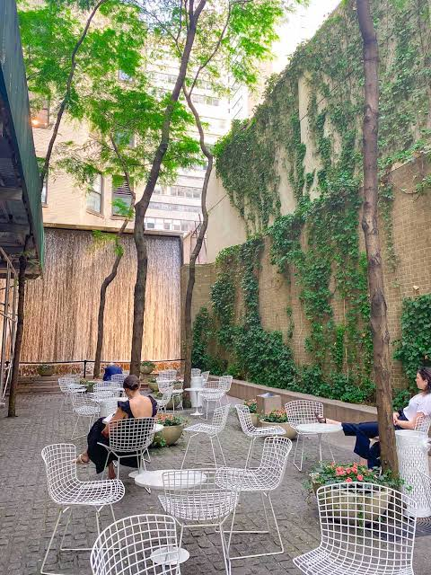

01. Statue of Liberty
El ícono más famoso de la ciudad y un símbolo de libertad.

Los clásicos no pueden faltar.
El ícono más famoso de la ciudad y un símbolo de libertad.

Luces, movimiento y energía en el corazón de Manhattan.
La ciudad a tus pies desde uno de sus edificios más emblemáticos.
Un gran oasis verde en medio del ritmo de Manhattan.
Un clásico para caminar y disfrutar del skyline neoyorquino.

Una estación impresionante donde la arquitectura cuenta historias.
Rincones escondidos de Nueva York.
Una isla tranquila con vistas únicas del skyline de Manhattan.

Una antigua estación de metro que conserva su arquitectura histórica.

Un pequeño oasis urbano escondido entre los edificios de Manhattan.